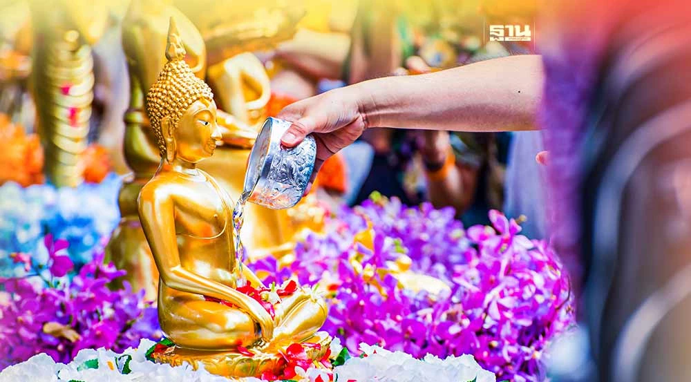

วันสงกรานต์ ตรงกับวันที่ 13 เมษายนของทุกปี คำว่า "สงกรานต์” มาจากภาษาสันสกฤต แปลว่า การเคลื่อนที่ หรือการ เคลื่อนย้าย หมายถึงการเคลื่อนย้ายของพระอาทิตย์จากราศีหนึ่งสู่อีกราศีหนึ่ง คือวันขึ้นปีใหม่นั่นเองตามความหมายในภาษาสันสกฤตสงกรานต์จึงเกิดขึ้นทุกเดือน ส่วนระยะเวลาที่คนไทยเรียก "สงกรานต์” นั้น เป็นช่วงที่พระอาทิตย์เคลื่อนย้ายจากราศีมีนเข้าสู่ราศีเมษ นับว่าเป็นมหาสงกรานต์ เพราะเป็นวันและเวลาตั้งต้นปีใหม่ตามสรุยคติ ช่วงเทศกาลสงกรานต์ คือ วันที่ 13-14-15 เมษายน โดยเรียกวันที่ 13 เมษายน ว่าวันมหาสงกรานต์ วันที่ 14 เมษายน เป็นวันเนา วันที่ 15 เมษายน เป็นวันเถลิงศก
สมัยก่อนถือวันสงกรานต์เป็นวันขึ้นปีใหม่ไทย ตรงกับช่วงหลังฤดูกาลเก็บเกี่ยวพืชพันธุ์ธัญญาหาร คนสมัยโบราณจึงคิดทำกิจกรรมเพื่อเป็นการพักผ่อนหลังจากทำงาน และเปิดโอกาสให้หนุ่มสาวได้พบกันและเล่นสาดน้ำกัน เพื่อคลายความร้อนในเดือนเมษายน
ปัจจุบันได้มีการเปลี่ยนแปลงให้พิธีสงกรานต์นั้นเป็นเทศกาลสงกรานต์ ในพิธีสงกรานต์จะใช้ น้ำ เป็นสัญลักษณ์ที่เป็นองค์ประกอบหลักของพิธี แก้กันกับความหมายของฤดูร้อน ช่วงเวลาที่พระอาทิตย์เคลื่อนเข้าสู่ราศีเมษ ในวันนี้จะใช้น้ำรดให้แก่กันเพื่อความชุ่มชื่น มีการขอพรจากผู้ใหญ่ มีการรำลึกและกตัญญูต่อบรรพบุรุษที่ล่วงลับ ต่อมาในสังคมไทยสมัยใหม่เกิดเป็นประเพณีกลับบ้านในช่วงเทศกาลสงกรานต์ นับว่าวันสงกรานต์เป็นวันครอบครัว อีกทั้งยังมีประเพณีที่สืบทอดมาตั้งแต่ดั้งเดิม อย่าง การสรงน้ำพระที่นำมาซึ่งความเป็นสิริมงคล เพื่อให้เป็นการเริ่มต้นปีใหม่ที่มีความสุข
การสรงน้ำพระ การรดน้ำขอพรผู้ใหญ่ การเล่นสาดน้ำในคนรุ่นราวคราวเดียวกัน หรือเยาว์กว่า เป็นความงดงามของประเพณี การสืบทอดจรรโลงประเพณีสงกรานต์จึงน่าจะช่วยกันรักษาคุณค่าทางใจ ความมีน้ำใจ การมีสัมมาคารวะและกตัญญู การช่วยเหลือเกื้อกูลต่อธรรมชาติต่อสิ่งแวดล้อม
แหล่งที่มา